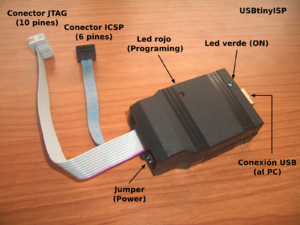
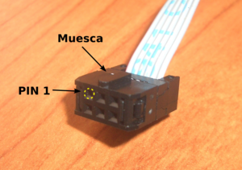
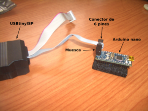

Grabador de AVRs:USBtinyISP v2.0

Contenido
[ocultar]Introducción
El grabador de AVRs USBtinyISP permite programar la memoria flash de los micros AVR de atmel. Se conecta al PC a través del USB. Es hardware libre, por lo que están disponibles todos sus esquemas.
Descripción
Este grabador se lo puede construir uno mismo desde cero o bien lo puede comprar como un kit para montar. Nosotros recibimos ese kit al comprarnos la impresora 3D CupCake (Una versión más pequeña de RepRap).


Las distintas partes del grabador son:
- Led rojo: Indica que la grabación se está realizando
- Led verde: Led de power. Se enciende cuando se conecta al USB del PC
- Conexión al PC: Conector para su conexión al PC mediante un cable USB
- Jumper: Sirve para configurar la alimentación del micro que se está grabando
- Jumper puesto --> El programador alimenta el micro (5v). La corriente máxima es de 100mA
- Jumper quitado --> La alimentación del micro a grabar se tiene que obtener mediante una fuente externa
- Conector ICSP: Conector de 6 pines para la grabación del micro. Es el que normalmente se usará.
- Conector JTAG: Conector de 10 pines para la grabación mediante JTAG
Conexión a un Arduino Nano
La programación normalmente se hará usando el conector de 6 pines. La muesca indica la orientación del cable. En algunas placas, este conector se puede conectar en dos orientaciones. Para saber cuál es la correcta hay que fijarse en dónde está el pin 1 del conector. En las siguientes figuras se muestra un ejemplo de conexión a un Arduino nano, para su programación:
|  Conector ICSP de 6 pines (src) |
 Programación de un Arduino nano (src) |


Software
El USBtinyISP es multiplataforma (Linux, Mac, Windows). Un software para su utilización, en línea de comandos, es el AVRDUDE
Instalación en Debian/Lenny
El AVRDude está disponible en los repositorios oficiales de Debian. Instalación:
$ sudo apt-get install avrdude
Probando el grabador
Lo normal es que este grabador nos lo construyamos a partir del kit, soldando los componentes electrónicos en la placa de circuito impreso. Una vez construida, para probarla seguir los siguientes pasos:
- Conectar el programador al USB del PC
- Comprobar que el led verde está encendido
- Al Ejecutar dmesg se debe ver algo como esto:
$ dmesg [...] usb 3-2: new low speed USB device using uhci_hcd and address 11 usb 3-2: configuration #1 chosen from 1 choice usb 3-2: New USB device found, idVendor=1781, idProduct=0c9f usb 3-2: New USB device strings: Mfr=0, Product=2, SerialNumber=0 usb 3-2: Product: USBtiny
Comprobando el grabador con un Arduino nano
- Conectar el grabador
- Asegurarse que el jumper del grabador está colocado
- Conectar el conector de 6 pines al Arduino nano
- Ejecutar este comando:
$ sudo avrdude -c usbtiny -p m168 avrdude: AVR device initialized and ready to accept instructions Reading | ################################################## | 100% 0.01s avrdude: Device signature = 0x1e9406 avrdude: safemode: Fuses OK avrdude done. Thank you.
Este comando no graba nada. Simplemente accede al micro y lee su configuración.
NOTA 1: Se ha ejecutado con sudo para tener privilegios de root. Si se ejecuta como un usuario normal se obtendrá lo siguiente:
$ avrdude -c usbtiny -p m168 avrdude: error: usbtiny_transmit: error sending control message: Operation not permitted
- No todavía qué permisos tengo que cambiar para que funcione como usuario normal
NOTA 2: Si el grabador no está conectado o se ha soldado incorrectamente, se obtendrá el siguiente mensaje de error:
$ sudo avrdude -c usbtiny -p m168 avrdude: Error: Could not find USBtiny device (0x1781/0xc9f)
Grabanción del Bootloader
Arduino Nano
La grabación del Bootloader se realiza desde el entorno de programación del Arduino.
- Lo primero es tener instaldo este entorno:
- sudo apt-get install openjdk-6-jre gcc-avr avr-libc avrdude
- Bajar paquete arduino-0015-linux.tgz
- Descomprimirlo, entrar en directorio y ejecutar arduino (con sudo, para tener privilegios para grabar)
$ sudo ./arduino
El entorno arrancará y se verá el pantallazo de la figura 1. Enchufar el grabador al USB. No olvidar conectar el jumper de alimentación.
- Ir a la opción tools/boards del menú superior y seleccionar el Arduino Nano.
- Ir a la opción tools/Bootloader y seleccionar la opción w/USBtinySP
La grabación del Bootloader comienza (fig 2). Se enciende el led rojo del grabador, y el verde se apaga. Al cabo de aproximadamente un minuto, la grabación termina (fig. 3), el led rojo se apaga y el verde se vuelve a encender. El micro ya tiene el Bootloader cargado.


Placa madre Reprap G3

La Placa madre de Reprap (v1.1) está basada en Sanguino. Para descargar el Bootloader hay que instalar primero el entorno de Arduino y luego añadir las extensiones para Sanguino. Ese trabajo de unificación lo hemos realizado para la versión Arduino 0015.
- Instalación del entorno software:
- sudo apt-get install openjdk-6-jre gcc-avr avr-libc avrdude
- Bajar el paquete Arduino-Sanguino-0015.tar.gz
- Descomprimirlo, entrar en directorio y ejecutar arduino (con sudo, para tener privilegios para grabar)
$ sudo ./arduino
El entorno arrancará y se verá el pantallazo de la figura 1. Enchufar el grabador al USB. No olvidar conectar el jumper de alimentación.
- Ir a la opción tools/boards del menú superior y seleccionar el Sanguino.
- Ir a la opción tools/Bootloader y seleccionar la opción w/USBtinySP
La grabación del Bootloader comienza (fig 2). Se enciende el led rojo del grabador, y el verde se apaga. Al cabo de aproximadamente un minuto, la grabación termina (fig. 3), el led rojo se apaga y el verde se vuelve a encender. El micro ya tiene el Bootloader cargado.
Al terminar la carga, el led rojo de DEBUG emitirá unos cortos destellos. Esto también ocurrirá cada vez que se apriete el botón de reset de la placa. Así podemos saber si el Bootloader está cargado.
Enlaces
- USBtinyISP. Página web del grabador donde se encuentra toda la información
- Arduino. Página principal
Noticias
- 08/Mayo/2009: Versión inicial de esta página